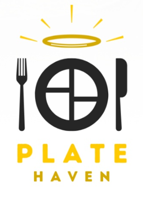

Projects
7-DOF Robotic Manipulator Simulator
Spring 2024
 I worked in a 4-person team to develop a MATLAB-based simulation of a PUMA 560 industrial manipulator. The Puma 560 manipulator is 6-DOF arm, giving us a realistic model of a common industrial manipulator. We used an URDF file as well as research papers using this arm to develop a kinematics and dynamics model of the arm in MATLAB. For movement calculations, we used the Product of Exponentials formula for forward kinematics and the Recursive Newton-Euler method for dynamics. This gave us fine control over the motion at each joint, as well as the torque required to safely move the arm under a load.
I worked in a 4-person team to develop a MATLAB-based simulation of a PUMA 560 industrial manipulator. The Puma 560 manipulator is 6-DOF arm, giving us a realistic model of a common industrial manipulator. We used an URDF file as well as research papers using this arm to develop a kinematics and dynamics model of the arm in MATLAB. For movement calculations, we used the Product of Exponentials formula for forward kinematics and the Recursive Newton-Euler method for dynamics. This gave us fine control over the motion at each joint, as well as the torque required to safely move the arm under a load.
For our simulation, we used the MATLAB app designer to construct a simple control system. One window provided users the ability to enter desired end-effector position and orientation, as well as a simualated load representing an object held by the arm. A second window showed a real-time simulation of the arm, as well as plots showing joint states throughout motion. While simple, this simulation gave me a experience developing motion control for an industry-level manipulator while also serving as an introduction to useful tools such as the MATLAB app designer, URDF files, and Peter Corke's Robotics Toolbox.
Check out our codeAutonomous Maze Mapping and Traversal
Spring 2024
Along with two teammates, I developed code to autonomously map an unknown maze environment before solving the "kidnapped robot problem" in that environment. We programmed a Turtlebot3 Burger running Python in ROS, allowing us to easily combine classes for different functionality into an efficient final software suite. To this, we started with simple controls for a differential drive bot to allow for smooth high-speed motion, before building a navigation package built around a custom A* algorithm. This algorithm was modified to find paths with both minimal distance traveled as well as maximum distance from walls, for extra safety while moving. I also implement a custom pure pursuit controller for motion, essentially smoothing out the robot's path by predicting the robot's future position and adjusting its trajectory accordingly, allowing us to move faster and with less turns than other project teams.
We then implemented SLAM using the ROS gmapping package, allowing us to easily map the environment by calculating optimal centroids for exploration and navigating to them until all unknown areas were mapped. After mapping was complete, we used the AMCL package with custom parameters to perform localization after the robot was moved to an unknown location in the maze. Finally, we added a unique potential fields-based obstacle avoidance method to automatically detect and avoid both known and unknown obstacles during movement, allowing for avoidance of even dynamic obstacles in the workspace.
Read more Check out our code See if in actionArtificial Intelligence for Robotic Control
Winter 2024
I worked in a team of three to develop control code for a robot navigating a complex environment based on the arcade game "Bomberman." This involved the implementation and testing of various AI algorithms including Minimax, Expectimax, and Approximate Q-Learning. We also developed a finite state machine framework, as well as a custom A* implementation, to assist in our character's navigation. This project spanned a variety of difficulty levels, with project variants introducing additional obstacles and enemies into the game space, requiring us to optimize our code to succeed in these more difficult scenarios.
Check out our codeBrigham and Women's Hospital Staff Portal
Spring 2023
For this project, I worked in a team of ten to create a desktop application for Mass General Brigham and Women's Hospital. Using Agile design methodologies to organize our work, we implemented a variety of features including pathfinding, a map editor, component movement to allow for moving offices and departments, service request modules, hospital-wide announcements, and instant messaging. This application was then presented to hospital representatives to provide them information and ideas about potential features and UI/UX designs for their internal system.
Read More See it in actionColor-sorting Pick-and-Place Robot
Winter 2023
Along with two other robotics students, I created a MATLAB library to control a 3-DOF robotics arm. Over the course of the project, we implemented forward and inverse kinematics using both position and velocity, and trajectory generation. To assist with testing motion control, we also implemented a real-time virtual simulation of the end-effector's motion, with options to generate a variety of graphs during movement.
For our final demonstration, we developed computer vision code to use a free-standing camera to detect a variety of colored balls, and sort them into different locations by color. Our robot would continue to run until all objects in the workspace had been correctly sorted, before returning to a standby position. After a successful demonstration of our base functionality, we added detection for additional colors as well as non-spherical objects.
Read More See it in actionMulti-robot Escape Room Navigation
Fall 2022
 I worked on creating three Romi robots to solve an "Escape Room" maze. Each robot was designed to complete one component of the overall project: locating the escape door and activating the door key, locating and obtaining the door key,
or opening and driving through the escape door. To do this, we used C++ code to implement a variety of sensors, as well as kinematics and PID control for motion. We developed control code that was also resilient to obstacles or
unexpected changes in the environment, as our class was the first to complete this project. This resilience in our code helped ensure that all three robots could consistently complete
their given tasks during final demonstrations.
I worked on creating three Romi robots to solve an "Escape Room" maze. Each robot was designed to complete one component of the overall project: locating the escape door and activating the door key, locating and obtaining the door key,
or opening and driving through the escape door. To do this, we used C++ code to implement a variety of sensors, as well as kinematics and PID control for motion. We developed control code that was also resilient to obstacles or
unexpected changes in the environment, as our class was the first to complete this project. This resilience in our code helped ensure that all three robots could consistently complete
their given tasks during final demonstrations.
Autonomous Panel Placement Robots
Fall 2022
 I worked with a team to create two robots to autonomously collect and replace solar panels on a model house. Each robot had a unique four-bar linkage arm and gripper assembly,
giving me experience with mechanical design and analysis. Both robots were required seperate analysis of force and control for the arm and gripper, but they both needed to be able to place collectors
at two different angles on the house. To ensure that we could efficiently develop our control software and test both robots, I lead the implementation of a single state machine in C++ that would
allow us to utilize identical code on both robots, with a remote control used to control which arm positions and gripper system to use for each run.
This highlighted my ability to create creative and optimal software solutions and lead a development team.
I worked with a team to create two robots to autonomously collect and replace solar panels on a model house. Each robot had a unique four-bar linkage arm and gripper assembly,
giving me experience with mechanical design and analysis. Both robots were required seperate analysis of force and control for the arm and gripper, but they both needed to be able to place collectors
at two different angles on the house. To ensure that we could efficiently develop our control software and test both robots, I lead the implementation of a single state machine in C++ that would
allow us to utilize identical code on both robots, with a remote control used to control which arm positions and gripper system to use for each run.
This highlighted my ability to create creative and optimal software solutions and lead a development team.
Plate Haven Application Case Study
Fall 2024
I helped create a full development plan for a restaurant review application called Plate Haven as a case study in the entrepreneurial process. My team and I started by researching possible market opportunities, and exploring emerging technologies and market trends that would enable viable startups in our researched markets. We settled on designing an application to help those with dietary restrictions (such as food allergies or religious diets) find restaurants whose menus and staffs could accommodate their needs. Over the course of the semester, we researched everything from marketing to patent law to value propositions. We then summarized our research and analysis in a final paper and presentation outlining our work and delivering a final evaluation on the financial viability of our fictional application.
Read moreAssessing the MMA Intern Program’s Impact on Science
Fall 2023
 I worked in a team of four to develop a database of former interns for the Maria Mitchell Association (MMA), a science education and reseach center in Nantucket, MA.
We used MMA archives and independent research to develop a list of former interns before distributing a survey to them regarding their accomplishments and career journey.
We also conducted interviews with select interns to gain a deeper understanding of their experiences at the MMA and beyond.
As deliverables, we created a final report of our research, and developed infographics to display the quantifiable impact of former MMA interns on the scientific community.
I worked in a team of four to develop a database of former interns for the Maria Mitchell Association (MMA), a science education and reseach center in Nantucket, MA.
We used MMA archives and independent research to develop a list of former interns before distributing a survey to them regarding their accomplishments and career journey.
We also conducted interviews with select interns to gain a deeper understanding of their experiences at the MMA and beyond.
As deliverables, we created a final report of our research, and developed infographics to display the quantifiable impact of former MMA interns on the scientific community.
WPI Esports Lab
Fall 2022
As part of the WPI Esports Club Executive Board, I helped design and implement the WPI Esports Lab and Gaming Lounge. These spaces provide students with opportunities to use state-of-the-art gaming equipment and get involved with collegiate esports. As Treasurer of the Esports Club, I managed the purchasing of all items for these spaces, and organized our final purchase report to the student government financial board for reimbursement approval. As current President, I help oversee the space, and I organize and run a variety of events to engage the WPI community. I have also led the growth of the club's tournament offerings.
Learn more about WPI Esports